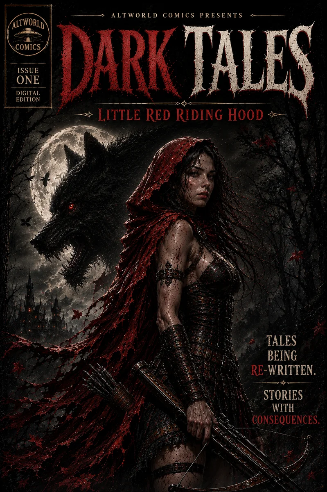

Original Comic
Dark Tales #1: Little Red Riding Hood
A classic tale rewritten as dark fantasy horror — and the beginning of the Dark Tales mythology.
About the Issue
Little Red Riding Hood believed her nightmare had ended long ago. But some legends refuse to stay buried.
The first issue of Dark Tales introduces the Taletellers and the larger idea behind the series: old stories can change, but the consequences inside them rarely disappear.
Inside the Release
- A complete original Dark Tales story
- The first appearance of the Taletellers
- Character profile material
- Bonus AltWorld Comics content